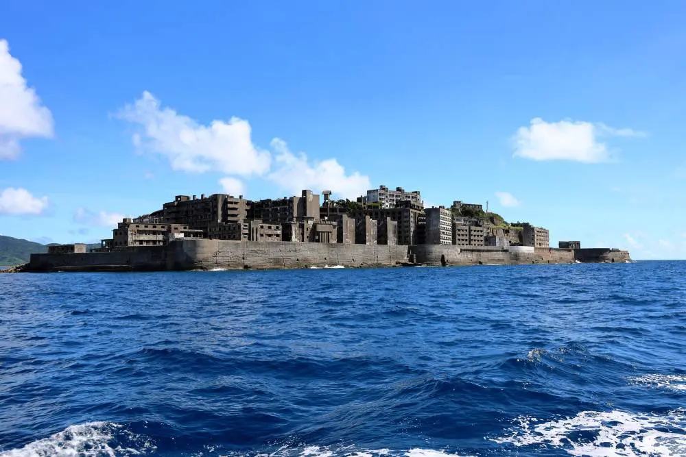

Introduction
Hashima Island, also known as Gunkanjima or “Battleship Island,” sits about 15 kilometers from Nagasaki, Japan. On the outside, it looks almost like a scene from a post-apocalyptic movie: huge, gray concrete buildings, smashed windows, and an atmosphere that feels stuck in another era. But if you go deeper than its ghostly look, you find a story that is basically the story of modern Japan—one that combines rapid industrialization, the cost of progress, and some of the most important questions about memory and responsibility. Over the years, the island went from a booming mining town to a forgotten ruin, and now to a controversial symbol. This is the real Hashima, not just the version that appears in tourist brochures or even movies.
Image source: NZ Herald, "Exploring Japan’s abandoned industrial island of Hashima," www.nzherald.co.nz/travel/exploring-japans-abandoned-industrial-island-of-hashima-50-years-after-its-closure/JPJ2P5CYL5D6BLXKGDIIULFHAM/
Growth & Peak: The Boom Years
The Hashima story really kicks off in the late 19th century, when Japan was determined to catch up to the world’s biggest powers. After coal was discovered under the island, the Mitsubishi company bought it and started digging. By the 20th century, Hashima was one of the country’s most important coal mines. Workers and their families moved in, and Mitsubishi built multi-story apartments, a school, shops, and even entertainment for the miners. At its peak, the island had more than 5,000 residents living on less than seven hectares. It was one of the most crowded places on the planet, but for a while, it felt like the future: electricity, running water, schools, and a close community all in one place (Japan Travel).
On the other hand, this “progress” was always tied to harsh realities. The weather could be brutal—typhoons regularly pounded the island—and space was so tight that people shared tiny rooms and communal bathrooms. Still, compared to other mining towns, Hashima’s residents had a decent quality of life. Some people remember it as “the town with everything,” but the reason it existed at all was to feed Japan’s growing hunger for energy. The mine ran 24/7, and the whole island operated like a single, giant machine. That level of productivity had its price, as later years would show.
Life on Hashima: Daily Realities
Life on Hashima Island was intense. Even though there were no trees, parks, or places to relax, people made the best of it. Kids went to school in the morning and played on rooftops. People did their shopping on the one street filled with tiny stores, and after work, families gathered in communal bathhouses (sento). For a lot of former residents, Hashima was a place of tough love—a community where everyone knew everyone else and neighbors always helped out when typhoons hit or power went out. In some ways, it was like living in a small town crammed into a single building, and even though the place was designed for work, people found ways to build a real life there.
Still, no one could escape the fact that life on Hashima revolved around coal. Men worked long, dangerous hours in the mines below the ocean, and sometimes, accidents happened. Many people say that even though it was hard, there was a strong sense of pride in being a Hashima resident. The story of daily life isn’t just about hardship—there are also memories of school festivals, family gatherings, and even rooftop gardens where people tried to grow a few flowers in pots. That’s what makes Hashima more than just an abandoned ruin; it’s a place full of real human stories (Japan Travel).
The Dark Side: Forced Labor and Memory
One of the most important, and honestly troubling, parts of Hashima’s history is what happened during World War II. As the war dragged on and the need for coal increased, Japan started forcing Korean and Chinese laborers to work in mines all over the country—including Hashima. Conditions were harsh, and people worked incredibly long shifts for almost no pay. Many were abused, lived in overcrowded barracks, and suffered from malnutrition, illness, and dangerous accidents. For years, their stories were ignored or covered up, but they remain a crucial part of the island’s history (Yonhap News).

Image source: Yonhap News, en.yna.co.kr/view/AEN20170727005900315
Even now, when you visit or read about Hashima, you find that this part of its history is still debated. Some former residents say they hardly saw any forced laborers, while survivors and their families tell a completely different story about violence, exploitation, and death. Today, Korean and Chinese groups are still fighting for recognition, apologies, and accurate memorials. This shows that Hashima isn’t just an old mining town—it’s a symbol of the struggle over how history gets remembered.
Closure and Rediscovery
After the war, Hashima kept going strong for a few decades, but eventually, Japan’s economy shifted. Oil started replacing coal, and suddenly the island wasn’t needed anymore. In 1974, Mitsubishi shut down the mine, and within days, everyone left. People abandoned furniture, toys, books—whole lives were left behind. For years, Hashima just sat there, battered by typhoons and slowly falling apart.
In the 2000s, the island started making headlines again. Photographers, documentary filmmakers, and even the James Bond movie “Skyfall” used it as a dramatic backdrop. Japan opened up tours, and some people even started calling it the “Japanese Atlantis.” The ruined buildings, once full of life, became a powerful reminder of how quickly things can change (Japan Travel). But the more people talked about Hashima, the more debates flared up—especially about what should be remembered and how.
UNESCO World Heritage & Ongoing Controversy
In 2015, Japan pushed for Hashima Island to be recognized as a UNESCO World Heritage site. On the surface, this looked like a win: more international recognition and protection for a unique part of Japanese history. But from the beginning, this decision was complicated. South Korea and China strongly protested, arguing that Japan wasn’t doing enough to acknowledge the forced labor that took place on the island during the war.
The controversy didn’t end when UNESCO approved the site. In 2021, UNESCO’s World Heritage Committee reviewed Japan’s progress and basically said it wasn’t enough. They criticized Japan for failing to fully present the history of forced labor at the island’s visitor center and in its official materials, and urged the country to take more action. These international debates make it clear that Hashima is about more than ruins or nostalgia—it’s about memory, justice, and the way we teach history (UNESCO Decision 44 COM 7A.28).
Timeline: Key Events of Hashima Island
1810
- Coal is discovered on Hashima Island, but the area remains mostly undeveloped.
1890
- Mitsubishi buys Hashima and starts full-scale coal mining, quickly turning the island into an industrial hub. First workers’ quarters are built (Japan Travel).
1916
- The first large concrete apartment block is completed to house more miners and their families, marking the start of Hashima's iconic skyline.
1930s
- Hashima’s population grows rapidly as demand for coal soars. The island is known as the most densely populated place on earth.
1940s
- World War II: Hundreds of Korean and Chinese workers are forcibly brought to Hashima, working in dangerous, abusive conditions (Yonhap News).
1959
- Population peaks at over 5,200 residents. The island is packed with apartments, schools, shops, and even a cinema. Life is tough, but there’s a strong community spirit (Japan Travel).
1960s
- Oil begins to replace coal in Japan’s economy. The first signs of decline appear as mining becomes less profitable.
1974
- The mine closes abruptly. In just a few weeks, all residents leave. The island is left completely abandoned (Japan Travel).
2009
- Japan opens Hashima to the public for limited, guided tours. Urban explorers, photographers, and journalists bring new attention to the island’s story.
2015
- Hashima is designated a UNESCO World Heritage Site as part of Japan’s Meiji Industrial Revolution. This sparks controversy and protests from South Korea and China (UNESCO).
2021
- UNESCO criticizes Japan for not fully acknowledging the island’s forced labor history in its official materials. Ongoing debates continue about how the site should be remembered (UNESCO).
Today
- Hashima stands as a symbol of both industrial progress and historical memory, with its future as a teaching tool still debated worldwide.
Why Should Schools Teach About Hashima Island?
If you’re wondering why Hashima Island should be taught in schools, the answer is pretty simple: it’s a story about the real costs and consequences of progress. Most textbooks focus on big inventions or victories, but Hashima shows what happens to ordinary people in the rush to modernize. For students, learning about Hashima is a way to understand how communities are shaped (and sometimes destroyed) by bigger economic and political forces.
There’s also the issue of memory and responsibility. Teaching about Hashima means facing the uncomfortable truth that history is not always black and white. It challenges students to look beyond patriotic myths and consider whose voices are left out—especially the Korean and Chinese laborers who were forced to work in brutal conditions. In our world today, where debates over history and memory are everywhere, being honest about places like Hashima is more important than ever.
Plus, learning about Hashima connects to questions about the environment, labor rights, and what happens when technology outpaces human needs. In other words, it’s not just about the past—it’s about the choices we make now. By including Hashima in the curriculum, schools give students the tools to think critically, empathize with others, and see the complexity in every “success story.” Ultimately, Hashima is a reminder that progress and pain can happen at the same time, and understanding both sides is what education is supposed to be about.
Sources
- Japan National Tourism Organization. “Gunkanjima Island (Hashima Island).” Japan Travel, https://www.japan.travel/en/spot/752/. Accessed 20 May 2025.
- “Korean victims on Japan's Hashima Island.” Yonhap News Agency, 27 July 2017, https://en.yna.co.kr/view/AEN20170727005900315. Accessed 20 May 2025.
- World Heritage Committee. "State of conservation of properties inscribed on the World Heritage List: Sites of Japan’s Meiji Industrial Revolution." UNESCO Decision 44 COM 7A.28, https://whc.unesco.org/en/decisions/6364/. Accessed 20 May 2025.
- NZ Herald. “Exploring Japan’s abandoned industrial island of Hashima, 50 years after its closure.” NZ Herald, https://www.nzherald.co.nz/travel/exploring-japans-abandoned-industrial-island-of-hashima-50-years-after-its-closure/JPJ2P5CYL5D6BLXKGDIIULFHAM/. Accessed 20 May 2025. (Image: hashima.jpg)
- “Korean victims on Japan's Hashima Island.” Yonhap News Agency, https://en.yna.co.kr/view/AEN20170727005900315. Accessed 20 May 2025. (Image: korea.jpg)
- YouTube. “The Dark History of Hashima Island: Battleship Island.” Uploaded by NeoScribe, 16 May 2022, https://www.youtube.com/watch?v=7r0CHuqRkI8. Accessed 20 May 2025.